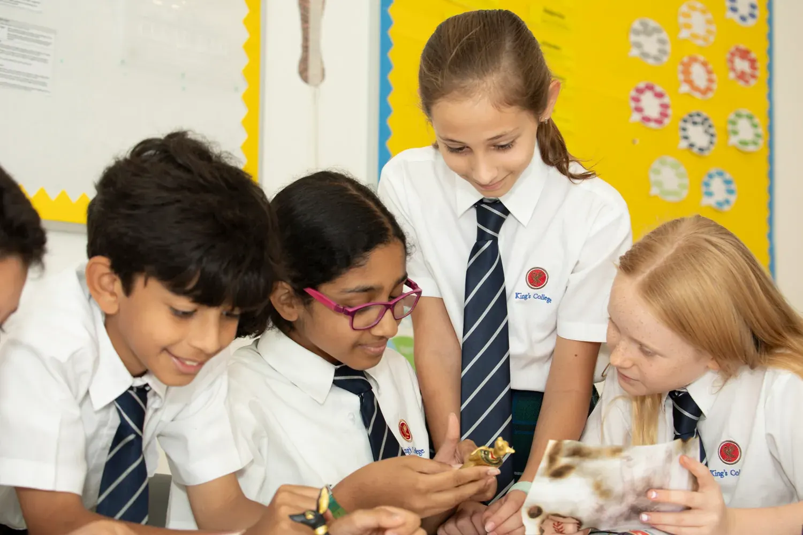
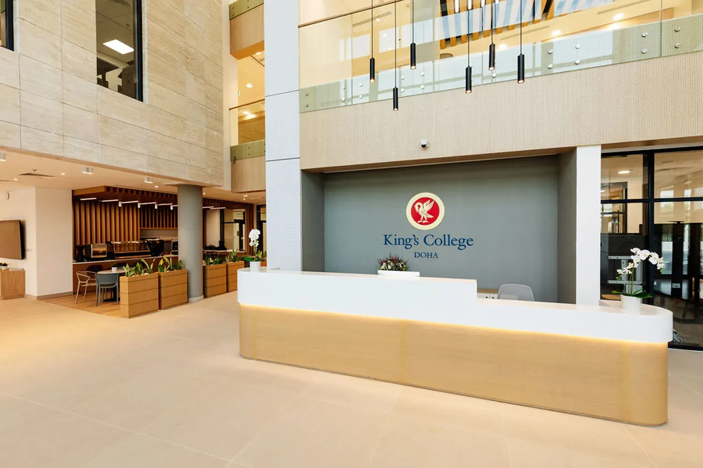
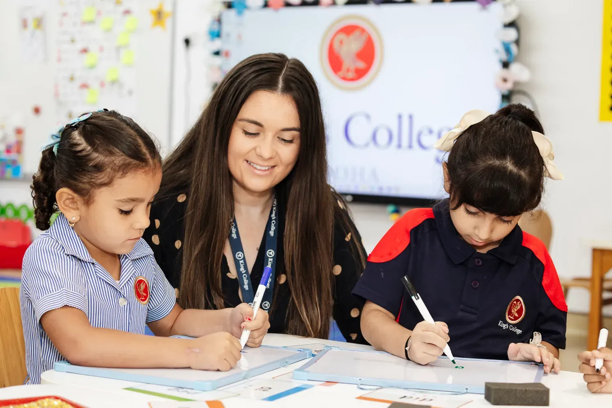
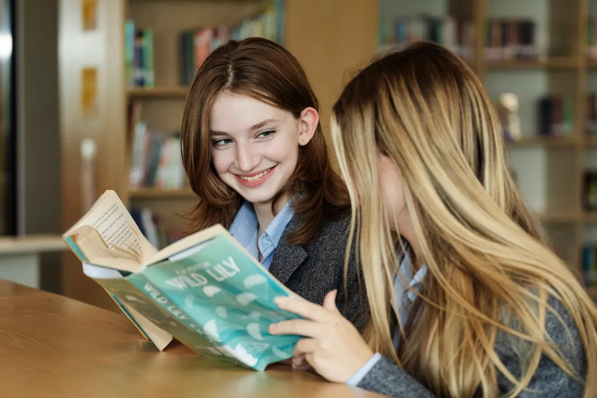
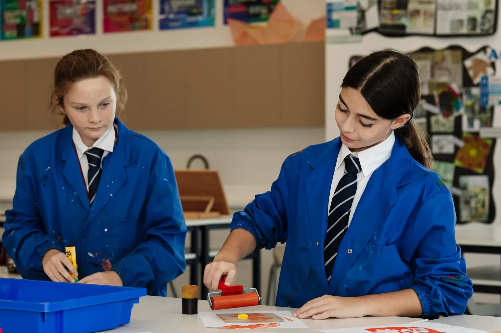
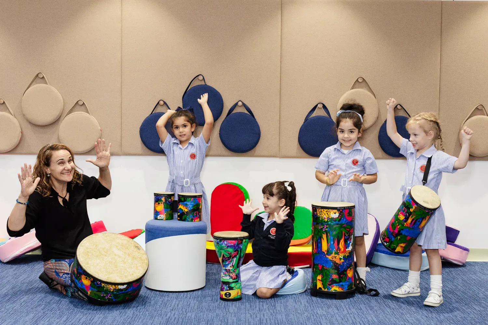

Welcome to King's College Doha
- 140+Years of heritage
- 2Campuses in Doha
- All-throughPre-School to Year 13
- BritishCurriculum
With a history spanning over 140 years, King’s College UK has long nurtured young people to excel in confidence, curiosity, and character. At King’s College Doha, we establish this proud British tradition in Qatar, fusing our Outstanding academic rigour with a deep respect for local culture and traditions.
Our prestigious all-through education is delivered across two state-of-the-art campuses in Doha: Al Thumama (Pre-Prep) and Mesaimeer (Prep, Senior, and Sixth Form). Dedicated facilities, specialist teaching from the very first years, and a curriculum that perfectly balances academics, sport, music, and the arts ensure every child is encouraged to thrive.
Operating under the five pillars of The King’s Identity (Confident, Creative, Committed, Caring, and Curious), our students learn to be resilient, collaborate effectively, and achieve more: both in the classroom and through co-curricular pursuits.
For King’s Doha, education extends beyond exam results; it is dedicated to shaping confident, compassionate young people, fully prepared for their role in a global future.

The King’s Family of Schools
King’s College Doha is the sister school to King's College UK, tracing a heritage that stretches back more than 140 years. This proud tradition of academic excellence, outstanding pastoral care, and co-curricular breadth now directly inspires our students here in Doha.
Through this close partnership, we deliver a first-rate British independent school education in Qatar, combining our heritage of teaching excellence with innovation to thoroughly prepare students for bright futures, both locally and globally.

Learning Without Limits
The learning environment at King’s Doha is carefully designed to spark genuine curiosity and build true resilience. Our children are actively encouraged to question, embrace challenges, and think independently, developing a love of learning that lasts a lifetime.
Within an enriched and balanced programme—from mathematics and science to languages, the arts, and physical education—students gain both profound knowledge and confidence.
We believe success rests not only on academic results, but on the courage to try, the creativity to innovate, and the character to make a difference. At King’s, our students are prepared to thrive in tomorrow’s world.

Start Your Child’s King’s College Journey
Join King’s College Doha and give your child the opportunity to flourish at one of Qatar’s leading British schools rooted in heritage and alive with innovation.
Apply NowWhy King’s College Doha
A student at King’s College Doha is well-rounded, ambitious, and confident: equipped with the knowledge, character, and courage to take on complex challenges and become a leader of the future.

140+ Years of educational excellence
King’s College Doha is the sister school to King's UK, which was founded by Royal Charter in 1873. Students at King’s College Doha benefit from this 140+ years of history, tradition and educational expertise.

All-round British curriculum
King’s College Doha delivers a truly all-round education, based on an enhanced version of the English National Curriculum, inspired by King’s UK. Academic progress is made alongside the development of new skills and interests through sport, music, the arts and an extensive range of activities.

Subject specialist approach
While general class teachers cover all subjects up to Year 6 in most schools, uniquely at King’s College Doha, all subjects are led by specialist teachers from Year 5 onwards, allowing optimum depth of learning. We also feature specialist teaching in core subjects from Pre-Prep (age 3).

Qatar culture and Arabic language
The King’s approach is tailored to fit with our local Doha setting. Arabic language, Islamic Studies and Social Studies are central components of our curriculum. Arabic language, for instance, is offered from Pre-Prep and delivered by subject specialist teachers.

Schools and Industry: Building the Future Together
In collaboration with the British Chamber of Commerce Qatar, Elodie Jugue, Deputy Head, Futures at King’s College Doha, sets out how the school’s growing partnerships with industry professionals...
Read more
King’s College Doha Celebrates A Level and GCSE Achievements for 2025/26
King’s College Doha is proud to celebrate the outstanding achievements of its students during the 2025/2026 academic year. Through hard work, determination and commitment to excellence, students...
Read more
King’s College Doha Recognised with the Edarabia Parents’ Choice Award 2026
King’s College Doha is delighted to have been recognised with the Edarabia Parents’ Choice Award 2026, a recognition that reflects the confidence, trust and support of the...
Read more